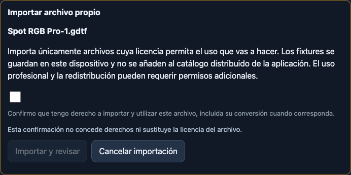
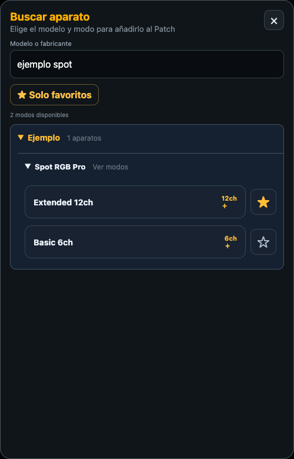
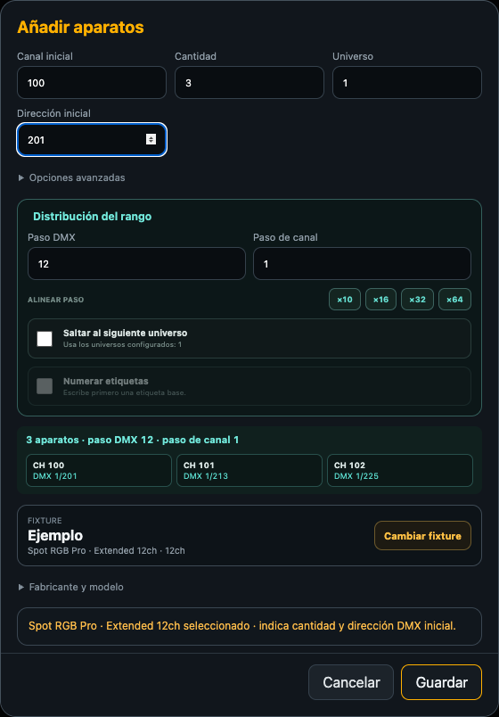

Para usar una personalidad GDTF, primero incorpórala a Mi biblioteca LX, después elige su modo en Buscar y añadir aparato y guarda la dirección y el canal en el Patch.
Qué recorrido puedes utilizar
| Recorrido | Disponibilidad en el código actual |
|---|---|
| Importar GDTF o fixture local | iPhone/iPad y Android |
| Consultar GDTF Share por marca y modelo | iPhone/iPad |
| Crear desde GDTF y elegir un modo como plantilla | iPhone/iPad |
| Buscar modelos, desplegar modos y usar favoritos | iPhone/iPad y Android |
La versión instalada debe incluir los botones que se describen. En Android puedes descargar el archivo GDTF mediante tu navegador y seleccionarlo desde la importación local.
Este recorrido utiliza el Patch local de Art-Net, sACN y OSC genérico. Con ETC Eos, el Patch consulta la mesa. El perfil grandMA3 utiliza los Fixture IDs y el show de la consola para sus controles.
Importar un archivo GDTF local
- Guarda el archivo
.gdtfen Archivos o en el almacenamiento del dispositivo. Conserva el archivo original para poder volver a importarlo. - En Pro L abre Patch → Personalizado → Mi biblioteca LX.
- Pulsa Importar GDTF o fixture local y selecciona el archivo. Este selector también admite personalidades
.lxfixtureo JSON compatibles. - Comprueba el nombre en Importar archivo propio, revisa la declaración y marca la confirmación de que tienes derecho a importar y utilizar ese archivo.
- Pulsa Importar y revisar y espera el mensaje de que el fixture está convertido y guardado en el dispositivo.
- Localiza el fabricante y el modelo en la biblioteca. Despliega el modelo para revisar sus modos y el número de canales de cada uno.
La conversión se realiza automáticamente en el dispositivo. La personalidad guardada queda disponible para nuevas altas en Patch y permanece al reiniciar la app. La aceptación de la declaración registra tu confirmación de uso del archivo.

Buscar e importar desde GDTF Share
Este apartado requiere conexión a internet y una versión que muestre GDTF Share en Mi biblioteca LX.
- Abre Patch → Personalizado → Mi biblioteca LX y despliega GDTF Share.
- Pulsa Consultar catálogo. Tras la primera carga, el botón cambia a Actualizar catálogo.
- Selecciona primero una Marca. Después escribe una o varias palabras del modelo en Modelo.
- Revisa el modelo, la revisión y el autor de la fila. Las etiquetas Fabricante o Usuario identifican cómo figura el autor en el catálogo.
- Pulsa Importar en la revisión que quieras utilizar. Se descargará el archivo y aparecerá la confirmación Importar archivo propio.
- Revisa y acepta la declaración que corresponda a tu archivo y pulsa Importar y revisar. Después continúa desde la biblioteca local y el Patch.
El contador muestra revisiones. Un modelo puede tener varias. Se muestran hasta 50 por página; usa Anterior y Siguiente cuando aparezcan. La búsqueda combina todas las palabras escritas, admite fragmentos y normaliza mayúsculas y tildes. Al cambiar la marca se vacía el texto del modelo.
Si la app pide actualizar el catálogo, pulsa Actualizar catálogo y vuelve a elegir la revisión. El catálogo consultado debe tener menos de 24 horas para permitir la descarga. Si aparece un error de conexión o sincronización, revisa internet y vuelve a consultar el catálogo.

Crear una personalidad desde un modo GDTF
- En Mi biblioteca LX, pulsa Crear desde GDTF y selecciona un archivo GDTF local.
- Revisa la declaración de uso y pulsa Importar y revisar.
- En Elige el modo de…, toca el modo que necesitas. La app prepara una copia editable con ese modo.
- Revisa fabricante, modelo, nombre del modo, canales DMX, resolución y parámetros. El footprint se calcula a partir de los canales definidos.
- Pulsa Guardar personalidad. Espera la confirmación y busca la copia guardada al añadir el aparato al Patch.
Este recorrido permite adaptar un modo concreto desde el editor. La importación directa guarda la personalidad convertida con los modos que contiene. Si un modelo ya está en uso en Patch, utiliza Duplicar para preparar una variante editable.
Encontrar un aparato rápidamente
En Buscar y añadir aparato
- Abre Patch → Personalizado → Buscar y añadir aparato.
- Escribe palabras de la marca y el modelo en Modelo o fabricante. Por ejemplo, para la personalidad de demostración de las imágenes puedes escribir
ejemplo spot. - Despliega el modelo y selecciona el modo correcto. La cifra ch indica su footprint DMX.
- Marca la estrella del modo que utilizas habitualmente. En la siguiente búsqueda pulsa ★ Solo favoritos para reducir la lista. Ver todos recupera todos los modos guardados.
La lista se organiza por marca → modelo → modo. Al escribir una búsqueda se abren las marcas coincidentes; despliega el modelo para ver sus modos. El contador indica modos disponibles. El buscador de Patch combina las palabras y admite mayúsculas o tildes indistintamente.
En Mi biblioteca LX
Usa Buscar fabricante o modelo para localizar una personalidad guardada. Empieza por una parte del nombre del modelo y abre su marca y su modelo para revisar los modos y las opciones Editar o Duplicar. Este campo busca un fragmento de texto dentro de los datos de fabricante, modelo e ID.
En GDTF Share
Selecciona la marca y escribe las palabras más distintivas del modelo. Si obtienes demasiadas revisiones, añade otra palabra. Si faltan resultados, prueba con una parte más corta del nombre y revisa la marca seleccionada.
Si una búsqueda de Patch queda vacía, pulsa Ver todos cuando esté activo Solo favoritos, acorta el texto y comprueba que el archivo ya está importado en Mi biblioteca LX.

Añadir los aparatos al Patch
- En la búsqueda toca el modo deseado. Se abrirá Añadir aparatos.
- Comprueba Canal inicial, Cantidad, Universo y Dirección inicial. El modo del aparato físico debe coincidir con el elegido.
- Para varios aparatos, revisa Distribución del rango. Paso DMX define la distancia entre sus direcciones iniciales y Paso de canal el incremento de canal de Pro L.
- Los botones ALINEAR PASO permiten redondear el paso DMX a múltiplos de 10, 16, 32 o 64. Comprueba el valor resultante y la vista previa.
- Activa Saltar al siguiente universo si necesitas continuar el rango en otro universo. En Art-Net y sACN se utilizan los universos activos configurados en Conexión.
- En Opciones avanzadas puedes ajustar Parte y Etiqueta. Si escribes una etiqueta base, puedes activar Numerar etiquetas.
- Comprueba los canales y direcciones de la vista previa y pulsa Guardar. Si aparece un conflicto o un rango inválido, corrige los campos que indica el mensaje.
Ejemplo. Para tres aparatos de 12 canales, con canal inicial 100, dirección inicial 201 y paso DMX 12, las direcciones iniciales son 201, 213 y 225. Cada aparato ocupa 12 direcciones. Comprueba que los rangos estén libres antes de guardar.

Revisar los controles después de importar
Abre Fixtures y selecciona el aparato patchado. Comprueba intensidad y los controles disponibles en el modo. El importador conserva offsets, resolución y los datos que reconoce del archivo. Los atributos con correspondencia admitida se presentan como controles específicos; otros pueden aparecer como canales DMX.
Los rangos con nombres definidos de forma inequívoca en el GDTF pueden aparecer como opciones de selección. Revisa esas etiquetas con el manual del aparato. Los parámetros de recorte compatibles, incluidos los atributos de cuchillas y giro reconocidos, pueden alimentar los controles de recorte. La disponibilidad depende de cómo esté descrito el modo.
Las personalidades convertidas desde GDTF quedan guardadas para uso local. El botón Exportar se muestra para las personalidades que permiten esa operación en la biblioteca. Conserva el GDTF de origen para reutilizarlo en otro dispositivo.
Resolver problemas de importación o búsqueda
- El archivo está guardado en la biblioteca y no aparece como aparato patchado.
- Abre Buscar y añadir aparato, selecciona uno de sus modos, completa el formulario y pulsa Guardar.
- El modelo aparece y falta el modo que necesitas.
- Revisa la revisión GDTF elegida y el modo físico del aparato. En una personalidad creada con Crear desde GDTF se conserva el modo que seleccionaste al crear la plantilla.
- La importación rechaza el archivo.
- Lee el mensaje. El importador admite archivos de hasta 50 MB, y el modo debe caber en un universo de 512 direcciones. Los modos con varios bloques DMX, offsets solapados o descripciones inválidas pueden requerir otra personalidad o una definición propia.
- GDTF Share no deja escribir el modelo.
- Consulta el catálogo y selecciona primero la marca. Después estará disponible el campo Modelo.
- Mi biblioteca LX no encuentra un nombre que sí aparece en GDTF Share.
- Importa la revisión para guardarla en el dispositivo. Después busca por una parte del nombre local del modelo.
- Un aparato de varios canales solo muestra controles básicos.
- Comprueba el modo, el footprint y los canales importados. Algunos atributos se conservan como DMX. Utiliza una copia editable para completar los controles que necesites según el manual del aparato.